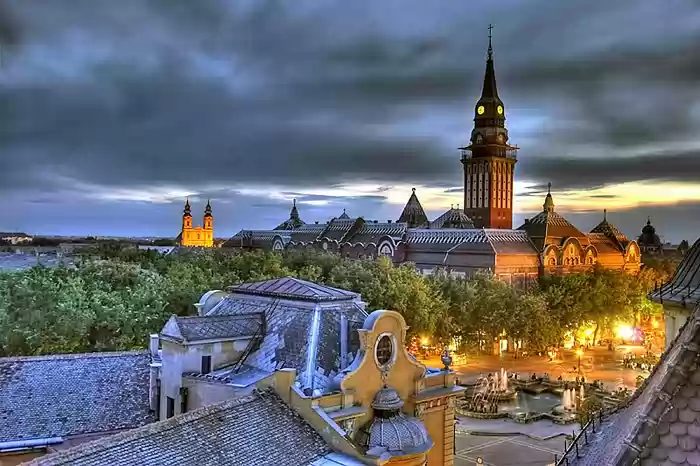

SRBIJA
Subotica je drugi grad po veličilni u Vojvodini, centar njenog severnog dela. Nalazi se na krajnjem severu Bačke, uz samu granicu sa Mađarskom, na
međunarodnom putu E-75 i na železničkoj trasi koja vezuje Balkan sa severnom i zapadnom Evropom.

Osvojiće Vas arhitekturom, gde se prepliću stilovi gotike, baroka, secesije i neoklasicizma, što joj zasigurno daje poseban šarm. Za “Slobodan
kraljevski grad”, Subotica je proglašena 1779. godine.
Zgrada stare Gradske kuće - Monumentalna građevina s početka prošlog veka sa ornamentima, mozaicima i ukrasima velike umetničke vrednosti, Zgrada
Gradskog muzeja, Gradska biblioteka i pozorište, Katolička katedrala i jevrejska Sinagoga - Najveća na prostoru Vojvodine.